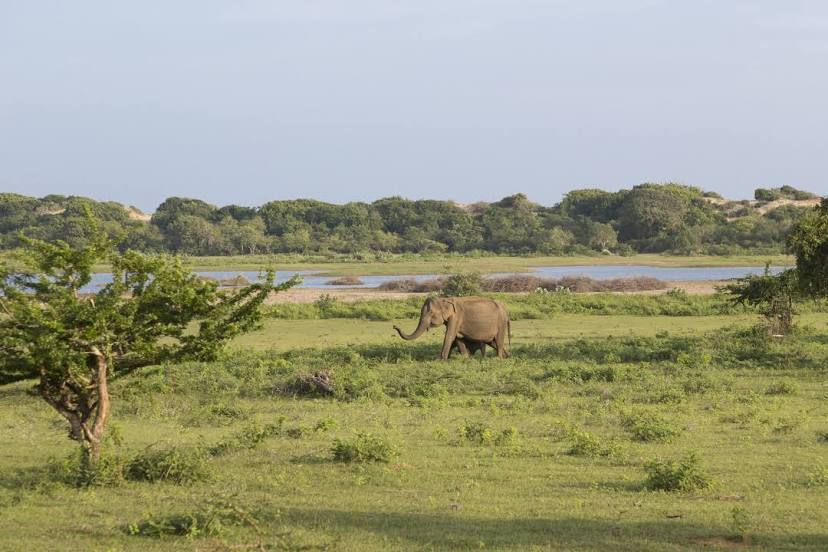
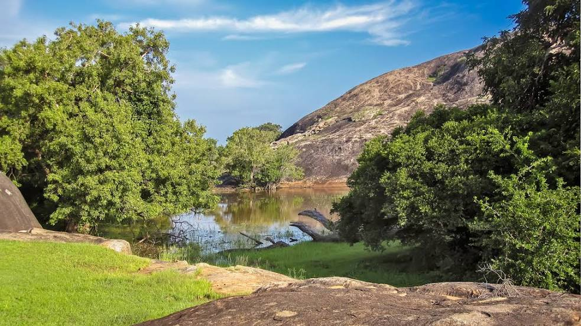

Where to go
|

Yala National Park Safari
Leopards, birds & Sithulpawwa monastery
|

Wilpattu National Park
Protected wilderness area with lakes
|

Bundala national park
National park & stop for migratory birds
|